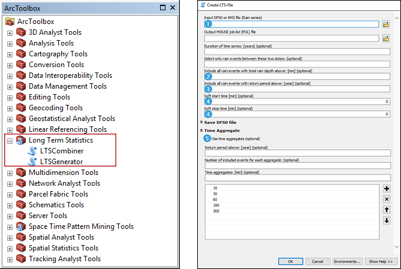

Velkommen.
Mit navn er Emil Nielsen, og jeg er uddannet civilingeniør indenfor Vand & Miljø. Jeg er fuldtidsansat hos Silkeborg Forsyning i spildevandsafdelingen.
CV: PDF
Bachelordiplom: PDF
Kandidatdiplom: PDF
Dette er primært en hjemmeside til at dele links til at downloade de projekter, jeg har udarbejdet under min uddannelse.
Driftoptimering af to afløbssystemer vha. prædiktiv realtidsstyring af bassinudnyttelsen. Anvendt online styring med korte radar-nowcasts for at kunne forudsige tilstrømningen til afløbssystemet.
I projektet er der arbejdet med:
Udvikling af sluseløsning, der beskytter kystnær bebyggelse fra oversvømmelse under kraftige stormhændelser. Analyse af løsningens evne til at reducere oversvømmelse igennem kalibreret hydraulisk model for fjorden. Analyse af løsningens effekt på vandmiljøet igennem en vandmiljømodel for fjorden.
I projektet er der arbejdet med:
Analyse af jordforurening fra ældre olietanke ved Hvorup Barakker, herunder risikoen for forurening af grundvandsindvindinger og nærliggende bygninger.
I projektet er der arbejdet med:
Analyse af Svenstrup afløbssystem igennem Mike Urban, herunder oversvømmelse, selvrensning og recipientbelastning. Udvikling af løsningsforslag, herunder separatkloakering.
I projektet er der arbejdet med:
Etablering af nye kildepladser i Aalborg kommune, herunder: Screening for nye placeringer af drikkevandsindvindinger og modellering af kildepladsens påvirkning af nærliggende vandløb og grundvandsafhængig beskyttet natur.
I projektet er der arbejdet med:
Long Term Statistics - ArcGIS Toolbox
Long Term Statistics toolbox er et værktøj til at udvikle DHI MIKE Urban LTS-filer (Long Term Statistics) igennem ArcGIS med en bedre og mere intuitiv metode.
Projektet kan findes her.
MUDeloplande2Dandas .ZIP
Klargør deloplande tegnet i Mike Urban til import i Dandas (ArcGIS toolbox).
MUS2ArcGIS .ZIP
Anvend Mike Urban Selection-filer i ArcGIS (ArcGIS toolbox).
Regexecutor .xlsm
Excel-ark med Regex-funktioner til at lave lister til fx SQL-forespørgsler.
Revert FLORA model area .ZIP
Fjern FLORA-modelområde ved at gendanne knudernes modelområde til en reference-FLORA-database (ArcGIS toolbox).
Transfer Mike Urban Project Settings (ArcGIS toolbox) .ZIP
Overfør simulerings- og LTS-indstillinger fra en Mike Urban-database til en anden (ArcGIS toolbox).
Catchment Processing .ZIP
Mike Urbans Catchment Processing-modul nu som ArcGIS-værktøj. Kan udregne befæstelsesgrad fra valgte (selected) deloplande i stedet for alle. Kan også sammenligne to Mike Urban-databaser og finde ændrede deloplande (ArcGIS-toolbox).
DandasNodes2ArcGIS .ZIP
Vis Dandas knude-XML-filer i ArcGIS (ArcGIS-toolbox).
FAS2Deloplande .ZIP
Udregn FAS-tal for deloplande ud fra forbrugsstatistik (ArcGIS-toolbox).
Find GPS-measured manholes .ZIP
Vis Dandas knude-XML-filer i ArcGIS, som er landmålt (ArcGIS-toolbox).
Find Unconnected Dandas Catchments .ZIP
Vis Dandas-deloplande, som er koblet til knuder, der ikke har det rigtige modelområde (ArcGIS-toolbox).
Get Terrain Elevation of Points .ZIP
Interpolér terrænkote/dækselkote for brønde ift. terrænkort (ArcGIS-toolbox).
KM2 Filtering .ZIP
Fjern regnhændelser fra KM2-filer under en angiven samlet regndybde eller regnhændelser, som ikke er accepteret (høj intensitet, sne mv.) (ArcGIS-toolbox).
LeicaGPS2Shape .ZIP
Konverter .XML-filer fra Leica GPS-stok til ArcGIS-shape-fil (ArcGIS-toolbox).
MU2Dandas .ZIP
Konverter Mike Urban brønde og ledninger til Dandas XML-filer til import i Dandas (ArcGIS-toolbox).
E-mail: enielsen93@hotmail.com
Tlf.: 60 64 52 04
8600 Silkeborg